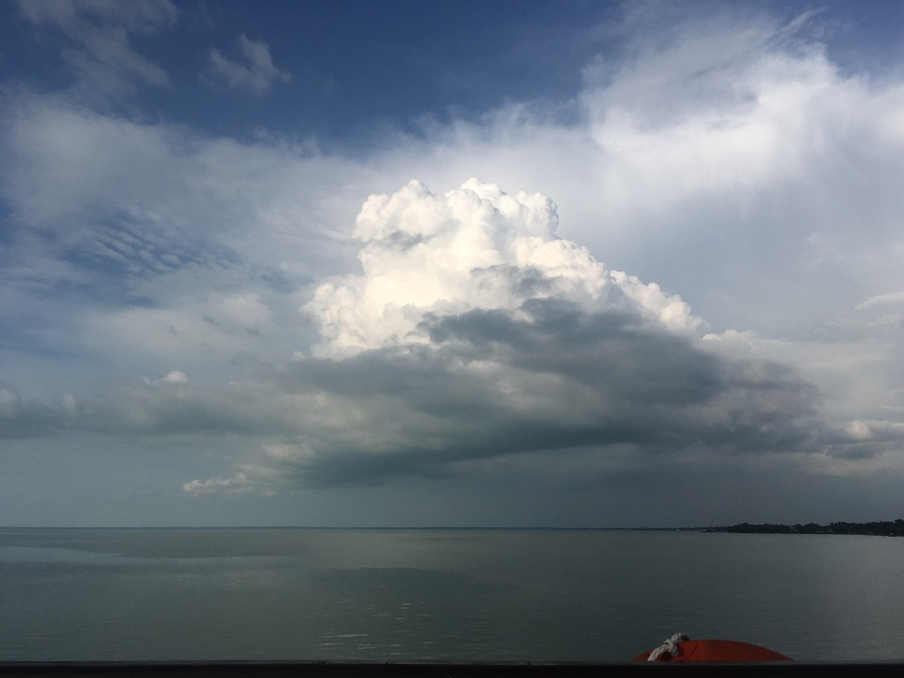

There were 16 of us nestled in the sunlit alcove of the church. I looked at the stranger sitting on a navy-blue cushion before me and wondered what she was thinking about. She smiled at me, and I smiled back. We introduced ourselves and made small talk, as did everyone else and their adjacent stranger. Then the bell chimed, and the room fell into silence.
We turned our gaze to Mike, the PI of the study. He had a gentle voice – like that of a breeze in the wind, calm, cool, wisened – and intense blue eyes that were easy to lose yourself in. Then the instructions came: we were told simply to look into our partner’s eyes for the next few minutes.
My partner and I fidgeted and repositioned ourselves on our increasingly stiff and uncomfortable cushions. Our eyes darted toward one another’s, then to the ground and to other objects in the room, then back again to our respective irises. Chocolate brown staring into forest blue. She smiled at me, and I smiled back. It was clear we had never actually looked at anyone like this before. We were two strangers waltzing in a burning room.
A minute or two passed before the discomfort was overtaken by a growing sense of awe and openness. The longer I looked at my partner, the more I saw once I had moved beyond the narrow horizon of her eyes. She was no longer just a stranger before me. She had become a multitude of constellating identities and stories, a twisted thread of immutable pasts and yet-to-be-had futures, a long line of unfulfilled promises and unfulfilling heartbreaks, an unimaginable plane of N dimensions, an infinity no mathematician could ever tame or understand.
Searching for certainties was no longer an option on the vast plains of vulnerability. My eyes no longer wanted to run. They had settled onto hers. There was nowhere left to go or hide. What remained was the raw openness of experience, of bearing witness, of measuring our moments not by the hands of the hour, but by the rapid echoes of our hearts.
